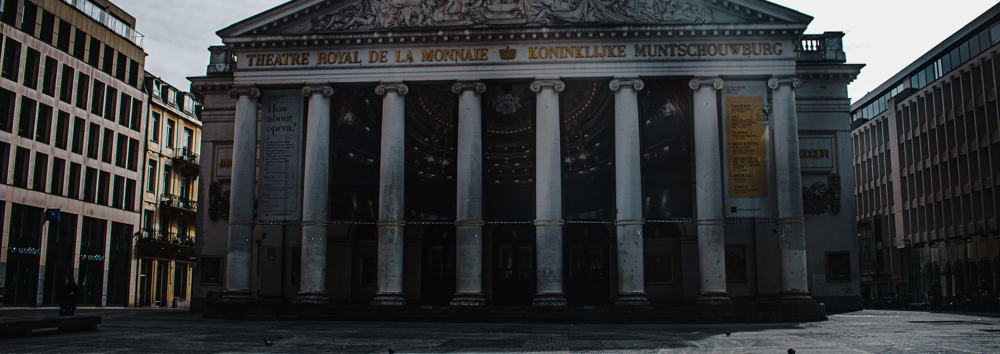
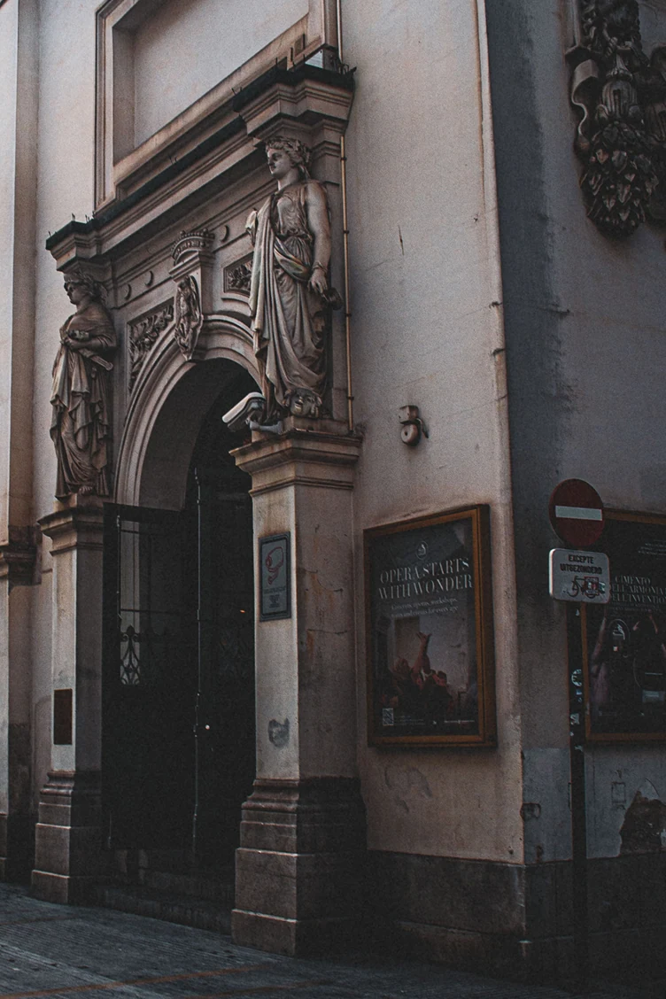
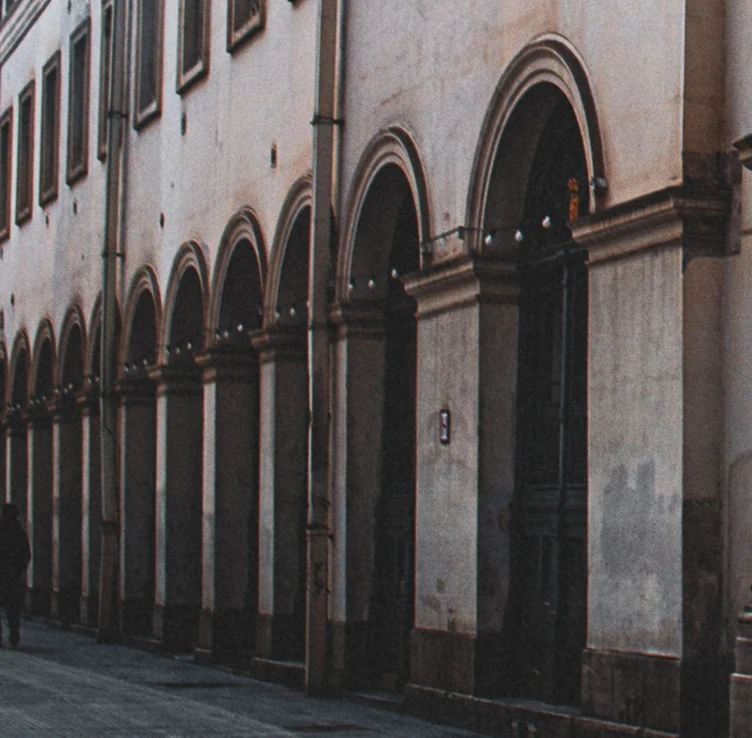
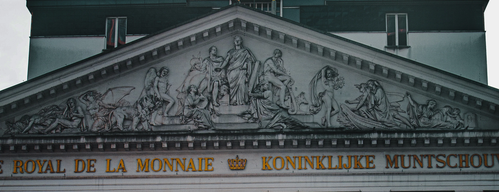
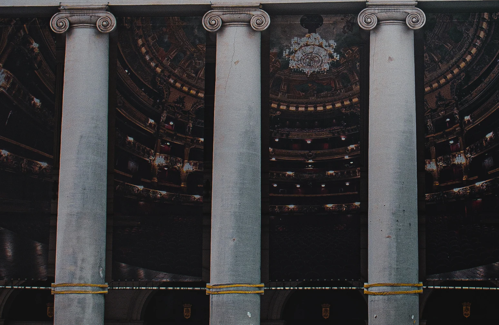
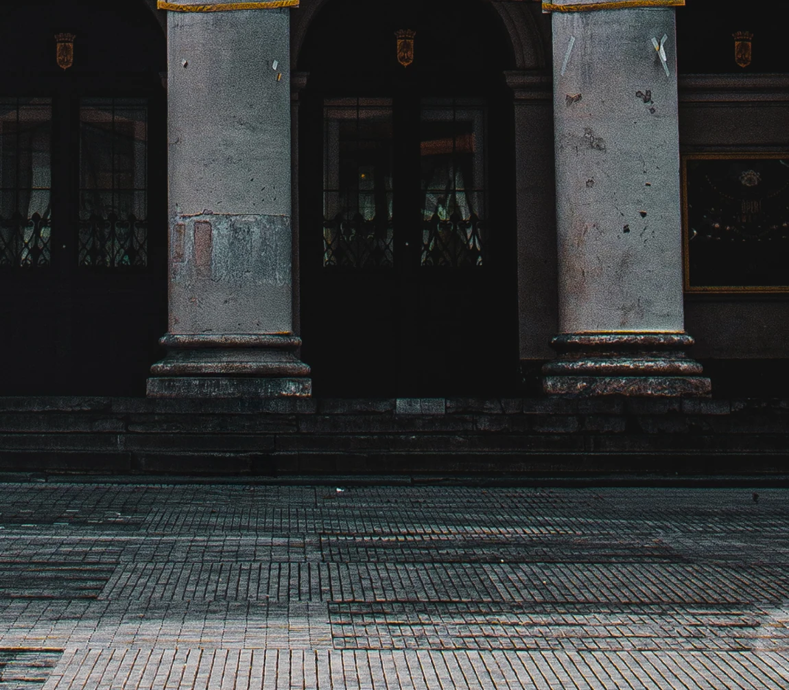

Place de la Monnaie
L'opéra
V
L'opéra



Un opéra sur la révolte de Masaniello contre l'occupation espagnole à Naples. La pièce avait été interdite quelques jours plus tôt, jugée trop politique. Ce soir, elle est de nouveau autorisée, donnée pour l'anniversaire du roi Guillaume Ier.



La salle est comble et dehors, une foule plus nombreuse encore serre les rangs devant le théâtre.
Au deuxième acte, le ténor Jean-François Lafeuillade entonne « Amour sacré de la Patrie, rends-nous l'audace et la fierté ». Au troisième acte, il crie « Aux armes ».
La salle ne reste pas assise. Une partie du public se rue dehors, et rejoint ceux qui attendaient déjà.
Le 4 octobre, la sécession est achevée. Le 18 novembre, un Congrès national proclame l'indépendance.
La Monnaie, c'est Bruxelles qui a laissé un opéra allumer un pays.